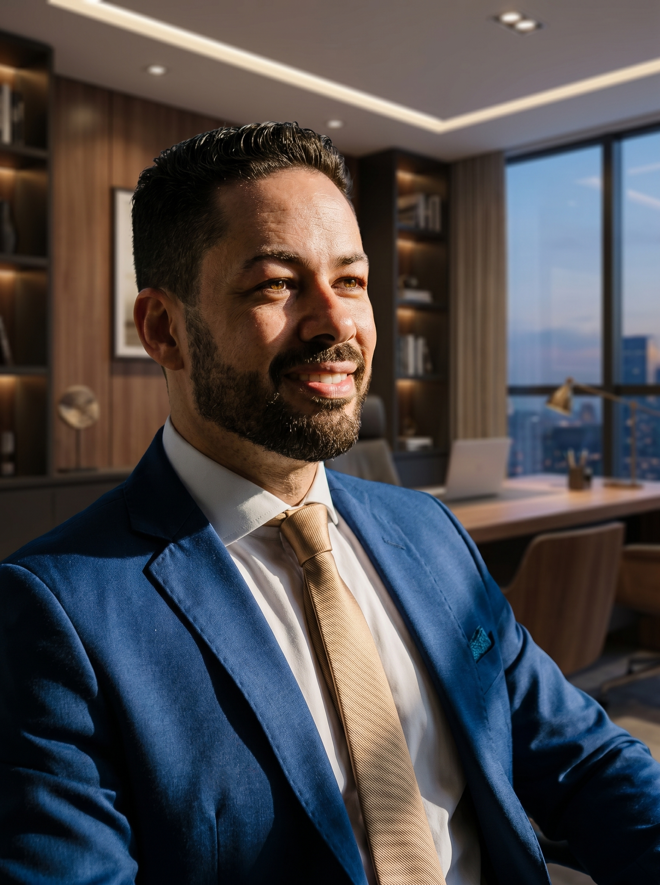
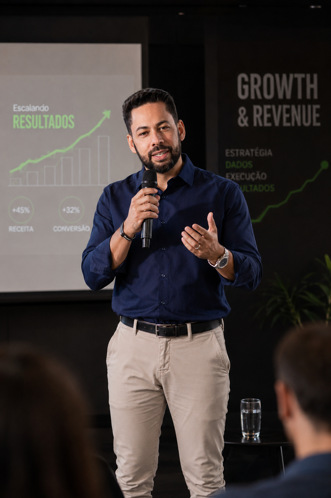
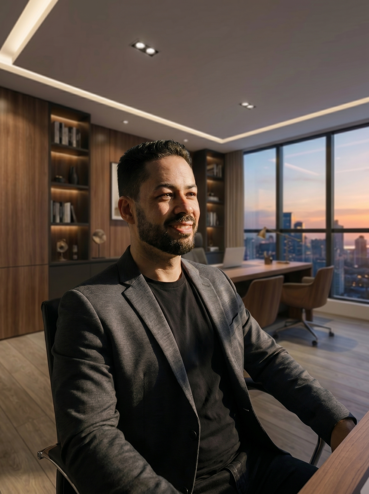
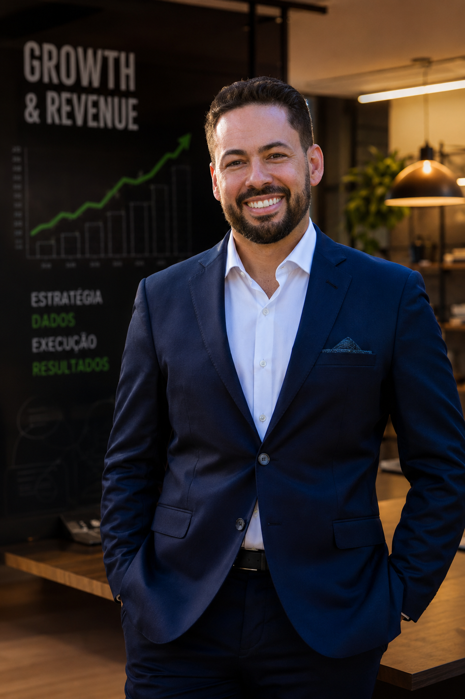

Como profissionais de comunicação e marketing saem do lugar de quem executa pauta para o lugar de quem decide, combinando estratégia, IA aplicada e acompanhamento individual.


Antes de estruturar a Vértice MAP, esse é o histórico que Thiago Fonseca construiu aplicando growth, estratégia e IA em operações reais:

Trocar por vídeo real (16:9, mínimo 1920×1080px). Se for arquivo próprio, salve como video-boas-vindas.mp4 na mesma pasta e troque a tag de imagem por <video controls>; se for YouTube/Vimeo, troque por um <iframe> com o link de embed.

Fundador do Grupo RAISE. Executivo de Growth, Revenue e Expansão de Negócios com mais de 19 anos de experiência, transitando entre comunicação corporativa, marketing e growth.
Foi assessor de comunicação do Hospital Felício Rocho, uma das principais instituições de saúde do país, por 3 anos. Fundou e conduziu a Karoo Comunicação, agência de estratégia, branding e crescimento empresarial, por 11 anos. Liderou o crescimento da Smartis, com 400% de aumento de base de clientes em 18 meses. Estruturou o crescimento de uma clínica de saúde, multiplicando o faturamento por mais de 8 vezes em 6 meses. Atuou como Head of Growth & Revenue em empresas de tecnologia, à frente de geração de demanda, expansão comercial e integração entre marketing e vendas.
Criou a Vértice MAP depois de identificar, na prática, o mesmo problema em dezenas de profissionais de comunicação e marketing: talento e entrega que ninguém ensinou a transformar em reconhecimento e resultado visível.
Uma iniciativa do Grupo RAISE.
Aplicar para a Turma Fundadora→Não. A trilha começa do zero e foi desenhada para profissionais de comunicação e marketing, não para perfis técnicos.
O programa existe justamente para devolver tempo para você, automatizando parte do operacional. O encontro ao vivo é de 90 minutos por semana, gravado para quem não puder participar.
Curso entrega conteúdo e te deixa sozinho para aplicar. Aqui você tem plano individual, sessões 1:1 e entregável obrigatório, com alguém acompanhando o seu caso específico.
O plano de ação é individual, construído na sessão de diagnóstico para o seu contexto, não para uma média do mercado.
Você documenta o primeiro resultado em 90 dias. Os 12 meses existem para consolidar a mudança, não para começar a ver resultado.
Vagas limitadas. Cada turma tem acompanhamento individual real, o que exige um número restrito de mentorados.
Aplicar para a Turma Fundadora→